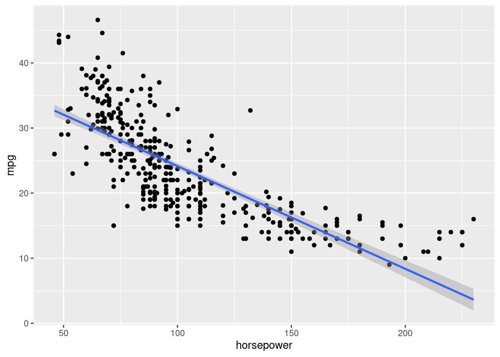
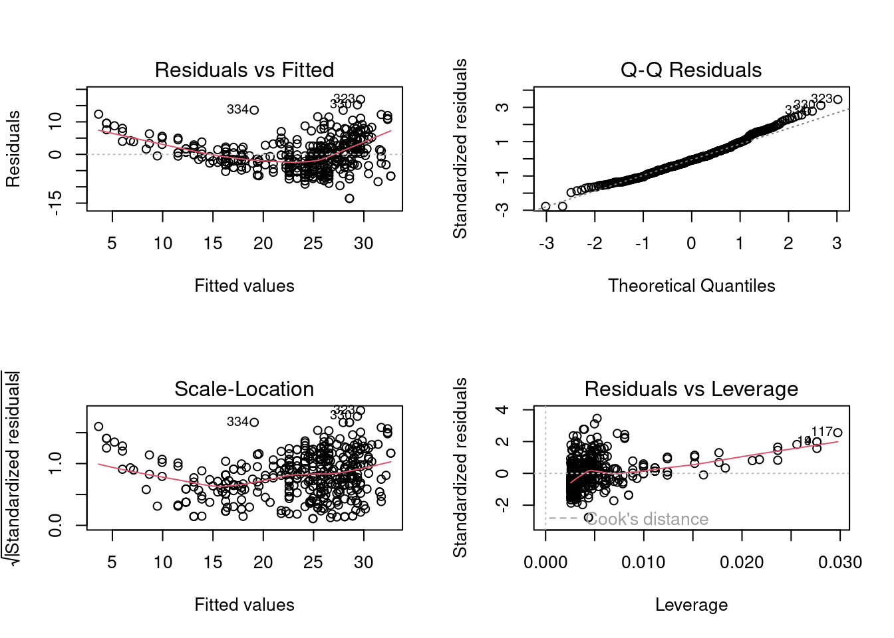
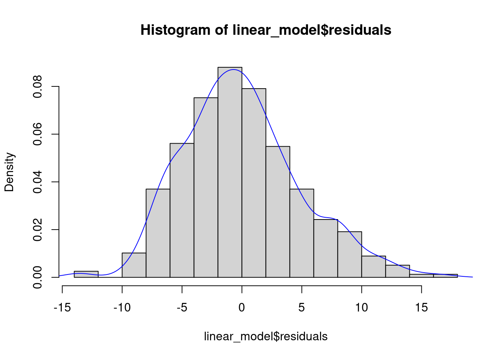

library(ISLR)
library(ggplot2)
library(lmtest)Loading required package: zoo
Attaching package: 'zoo'The following objects are masked from 'package:base':
as.Date, as.Date.numericLet us consider the Auto dataset from the ISLR library. The library is related to the book Introduction to Statistical Learning
library(ISLR)
library(ggplot2)
library(lmtest)Loading required package: zoo
Attaching package: 'zoo'The following objects are masked from 'package:base':
as.Date, as.Date.numericauto_data <- AutoSuppose we wish to predict mpg based on horsepower.
linear_model <- lm(mpg~horsepower, data = auto_data)Let us visualize the model fit to the data.
ggplot(data = auto_data, aes(x = horsepower, y = mpg))+
geom_point()+
geom_smooth(method = "lm")`geom_smooth()` using formula = 'y ~ x'
The plot indicates that a quadratic relationship between mpg and horsepower may be more appropriate.
Let us make diagnostic plots that help us check the model assumptions.
par(mfrow = c(2,2))
plot(linear_model)
We can check the linearity assumption visually by analyzing the plot of residuals against fitted values. The plot indicates that a quadratic relationship between the response and the predictor may be more appropriate than a linear one.
We’ll use the F test for lack of fit to check the linearity assumption
#Full model
full_model <- lm(mpg~as.factor(horsepower), data = auto_data)# F test for lack of fit
anova(linear_model, full_model)Analysis of Variance Table
Model 1: mpg ~ horsepower
Model 2: mpg ~ as.factor(horsepower)
Res.Df RSS Df Sum of Sq F Pr(>F)
1 390 9385.9
2 299 4702.8 91 4683.1 3.272 1.125e-14 ***
---
Signif. codes: 0 '***' 0.001 '**' 0.01 '*' 0.05 '.' 0.1 ' ' 1As expected based on the visual check, the linear model fails the linearity test with a very low \(p\)-value of the order of \(10^{-14}\). Thus, we conclude that relationship is non-linear.
The plot of the residuals against fitted values indicates that the error variance is increasing with increasing values of predicted mpg or decreasing horsepower. Thus, there seems to be heteroscedasticity.
Breusch-Pagan test
Let us conduct the Breusch-Pagan test for homoscedasticity. This is a large sample test, which assumes that the error terms are independent and normally distruted, and that the variance of of the error term \(\epsilon_i\), denoted by \(\sigma_i^2\), is related to the level of the predictor \(X\) in the following way:
\(\log(\sigma_i^2) = \gamma_0 + \gamma_1X_i\).
This implies that \(\sigma_i^2\) either increases or decreases with the level of \(X\). Constant error variance corresponds to \(\gamma_1 = 0\). The hypotheses for the test are:
\(H_0: \gamma_1 = 0\) \(H_a: \gamma_1 \ne 0\)
bptest(linear_model)
studentized Breusch-Pagan test
data: linear_model
BP = 8.7535, df = 1, p-value = 0.00309As expected based on the visual check, the model fails the homoscedasticity with a low \(p\)-value of 0.3%.
Brown-Forsythe test
To conduct the Brown-Forsythe test, we divide the data into two groups, based on the predictor \(X\). If the error variance is not constant, the residuals in one group will tend to be more variable than those in the other group. The test consists of a two-sample \(t\)-test to determine whether the mean of the absolute deviations from the median residual of one group differs significantly from the mean of the absolute deviations from the median residual of the other group.
#Break the residuals into 2 groups
residuals_group1 <- linear_model$residuals[auto_data$horsepower<=100]
residuals_group2 <- linear_model$residuals[auto_data$horsepower>100]#Obtain the median of each group
median_group1 <- median(residuals_group1)
median_group2 <- median(residuals_group2)#Two-sample t-test
t.test(abs(residuals_group1-median_group1), abs(residuals_group2-median_group2), var.equal = TRUE)
Two Sample t-test
data: abs(residuals_group1 - median_group1) and abs(residuals_group2 - median_group2)
t = 4.4039, df = 390, p-value = 1.375e-05
alternative hypothesis: true difference in means is not equal to 0
95 percent confidence interval:
0.7738625 2.0220633
sample estimates:
mean of x mean of y
4.308698 2.910735 Brown-Forsythe test also shows that there is heteroscedasticity.
The QQ plot indicates that the distribution of the residuals is slightly right-skewed. This right-skew can be visualized by making a histogram or a density plot of residuals:
par(mfrow = c(1,1))
hist(linear_model$residuals, breaks = 20, prob = TRUE)
lines(density(linear_model$residuals), col = 'blue')
shapiro.test(linear_model$residuals)
Shapiro-Wilk normality test
data: linear_model$residuals
W = 0.98207, p-value = 8.734e-05As expected based on the visual check, the model fails the test for normal distribution of error terms with a low \(p\)-value of the order of \(10^{-5}\).
This test is relevant if there is an order in the data, i.e., if the observations can be arranged based on time, space, etc. In the current example, there is no order, and so this test is not relevant.
If the linear relationship assumption violated, it results in biased estimates of the regression coefficients resulting in a biased prediction. As the estimates are biased, their variance estimates may also be inaccurate. Thus, this is a very important assumption as it leads to inaccuracies in both point estimates and statistical inference.
If the homoscedasticity assumption is violated, but the linear relationship assumption holds, the OLS estimates are still unbiased resulting in an unbiased prediction. However, their standard error estimates are likely to be inaccurate.
If the assumption regarding the normal distribution of errors is violated, the OLS estimates are still BLUE (Best linear unbiased estimates). The confidence interval for a point estimate, though effected, is robust to departures from normality for large sample sizes. However, the prediction interval is sensitive to the same.
Depending on the application, one assumption may be more important for the stakeholder than the other.